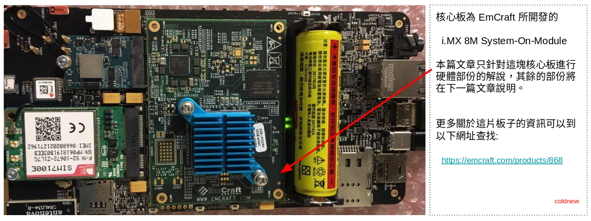

在 Librem 5 Dev-Kit 開發紀錄: 開箱文 一文中，我們開箱了 Librem 5 手機的開發板。
由於這一塊開發板其實也可以區分為核心板以及擴充板，因此筆者在這次的硬體介紹部份將會切成兩篇文章，好方便後續開發時的查看。
在這篇文章中，我們將看看 Librem 5 所使用的核心板，也就是 EmCraft 所販售的 NXP i.MX 8M System-On-Module。
核心板在哪 ?
由於 Librem 5 Dev-Kit 開發紀錄: 開箱文 一文中我們只做簡單的開箱，因此先指出核心板在哪吧! 就在背面 (沒有螢幕那面) 的中間

從上面的資訊，可以得知這部份是 EmCraft 所開發的板子，為 NXP i.MX 8M System-On-Module。
概觀
知道核心板是 NXP i.MX 8M System-On-Module 後，我們可以在該網站下載 i.MX 8M SOM hardware architecture specification.pdf ，這份 PDF 檔案描述了關於這塊核心板的相關資訊。
我們來看看這塊板子與其方塊圖吧
核心板正面
方塊圖

這邊有一點要特別提及的事情是，從 NXP i.MX 8M System-On-Module 上面的資訊來看，這塊核心板本該有 藍芽/WiFi 模組的，但可能是成本或是設計的關係，Purism 並未將這邊的組件放在核心板上，也因此本文的方塊圖也有做些調整。
大概知道這塊核心板的架構後，我們一項一項的來看各部份吧 :)
NXP i.MX 8M
整塊核心板最重要的部份就是 NXP i.MX 8M ，為 Arm Cortex-A53 搭配 Arm Cortex-M4 的 HMP (Heterogeneous multi-processing) 架構的 SoC，也是 NXP 公司接下來主推的晶片系列之一。
在本文中的核心板採用的是 MIMX8MQ6DVAJZAA 這個型號的 i.MX 8M 晶片，根據 i.MX 8M Quad Aplications Processors Data Sheet for Consumer Products.pdf 可以知道，這是一顆具有 4 核 Cortex-A53 搭配 1 核 Cortex-M4 的 SoC，並且內建了 GPU (Vivante GC7000Lite)、VPU 等功能。
方塊圖
型號功能判斷
PMIC
核心板選用了 ROHM BD71837MWV 這顆 電源管理晶片 (Power Control Integrated Circuit, PMIC) 來控制電源時序，而在 i.MX8 上，我們可以透過 I2C 接口的 Bus 1 來控制這一顆 PMIC。
I2C Bus
Power Map
SDRAM
這塊核心板採用了 3GB LPDDR4 的 DDR 晶片，不過由於有貼紙蓋在上面具體型號不得而知，但可以透過 free 命令確認系統的確是只抓到了 3GB 的 DRAM 空間。
root@pureos-test:~# free -m
total used free shared buff/cache available
Mem: 3001 85 2810 0 106 2843
Swap: 0 0 0
eMMC
核心板使用了 Kinston EMMC32G-M525 ，為 32GB 大小的 EMMC，我們可以透過 fdisk 命令確認這一點
root@pureos-test:~# fdisk /dev/mmcblk0 Welcome to fdisk (util-linux 2.33). Changes will remain in memory only, until you decide to write them. Be careful before using the write command. Command (m for help): p Disk /dev/mmcblk0: 28.5 GiB, 30601641984 bytes, 59768832 sectors Units: sectors of 1 * 512 = 512 bytes Sector size (logical/physical): 512 bytes / 512 bytes I/O size (minimum/optimal): 512 bytes / 512 bytes Disklabel type: dos Disk identifier: 0xe5daba62 Device Boot Start End Sectors Size Id Type /dev/mmcblk0p1 * 10240 380927 370688 181M 83 Linux /dev/mmcblk0p2 380928 7030783 6649856 3.2G 83 Linux Command (m for help): q
SOM Connector
由於這片 SOM (System-On-Module) 的主要任務就是加速開發者電路的開發，因此主要的元件就只有這樣，我們來看看到底是怎樣將這片核心板接到擴充板上的吧~
核心板(背面)
擴充板 (沒有螢幕那面)
核心板和擴充板採用 HRS 的 DF40 Connector 來作為連接器材，從整個 Librem 5 開發板支援 HDMI 的情況來看，這個聯接器應該是支援高頻訊號的 。拆卸再組裝其實蠻簡單的，但是由於這塊板子這邊接腳沒有防呆機制，小心拆下後裝錯燒掉呦~ (裝回來都要拜拜一下，因為我只有買一台 orz…)